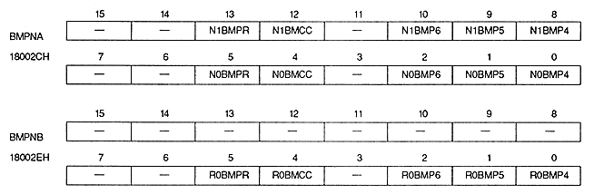

Special priority bit (for bitmap) : Bit map special priority bit
| N0BMPR | 18002CH | bit 5 | NBG0 |
| N1BMPR | 18002CH | Bit 13 | For NBG1 |
| R0BMPR | 18002EH | bit 5 | For RBG0 |
Please refer to “ 11.2 Special priority function ” for the usage of this bit.
| N0BMCC | 18002CH | Bit 4 | NBG0 |
| N1BMCC | 18002CH | Bit 12 | For NBG1 |
| R0BMCC | 18002EH | Bit 4 | For RBG0 |
Please refer to “ 12.2 Special Color Arithmetic Function ” for how to use this bit.